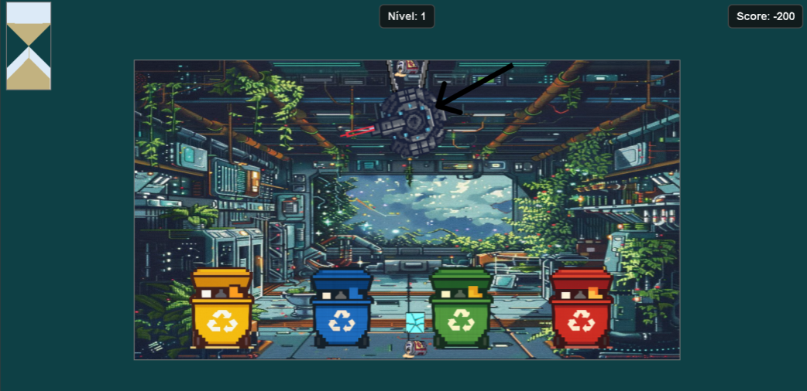
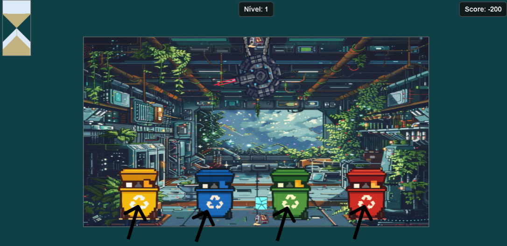
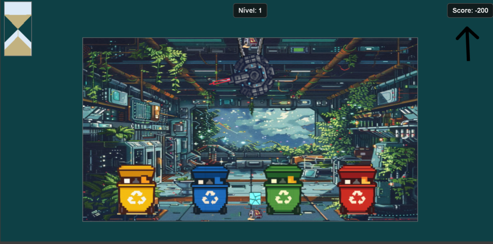
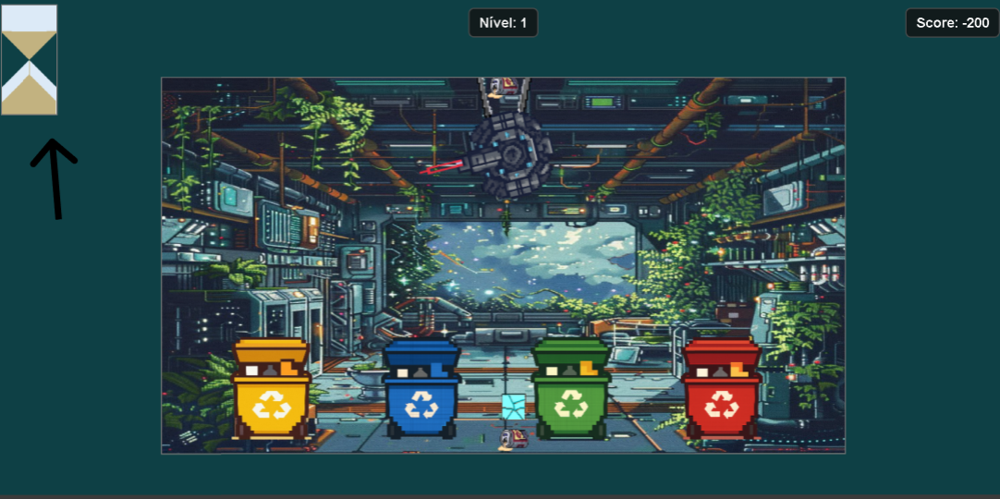

Como jogar
1. Use o rato (mouse)

2. Cada caixote tem uma cor e um tipo de material

3. Pontuação
• Se colocares o item no caixote certo, recebês 100 pontos.
• Se errares, perdes 50 pontos.
• Se deixares o caixote cair, ganhas 100 pontos extra.

4.Para passar ao nível seguinte

Tens de ter pelo menos 1000 pontos tempo acabar. Tens tempo limitado para reciclar todos os itens. Vence o tempo na ampulheta!
Jogar Aqui